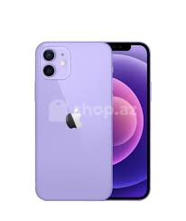
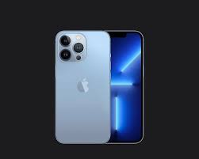
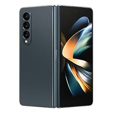
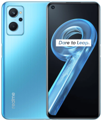

Hozirgi kunda mobil telefon hayotimizga juda katta tezlik bilan kirib keldi. Har bir xonadonda bu telefon turidan keng foydalanilmoqda. Shuning uchun bu maqolada mobil telefonga oid qiziqarli faktlar bilan sizlarni tanishtirib o‘taman. Nima deb o‘ylaysiz mobil telefonondan birinchi bo‘lib kim qo‘ng‘iroq qilgan? Albatta birinchi ishlab chiqargan korxona hodimi. Kimga qo‘ng‘iroqni amalga oshirgan? Dastlab Motorola korxonasi hodimi Martin Kuper 1973 yil Nyu-York ko‘chalaridan birida turib o‘z “konkurenti” (AT&T korxonasi hodimi JOEL Angel)ga mobil telefondan qo‘ng‘iroq qilgan va asabiga tegmoqchi bo‘lgan. Dastlabki mobil telefon (Martin Kuper qo‘ng‘iroq qilgan telefon) Motorola DynaTAC markali telefon bo‘lgan va u o‘sha paytda 3995 dollar narxda sotilgan. Dastlabki smartfon 1993 yilda yaratilgan. Bu qurilma 899 dollarga baholangan va u 500 gr og‘irlikka ega bo‘lgan. Uning nomi Simon.
Tepaga Hozirgi kunda dunyoda 3.5 mlrd dan ko‘p mobil telefoni mavjud ekan. Har yili taxminan 150 mln mobil telefon yaroqsiz deb tashlab yuborilar ekan. Abonentlar orasidagi eng uzoq masofa 1969 yil 21 iyulda qayd etilgan, O‘shanda Richard Nikson “Apollo 11” ekipajiga qo‘ng‘iroq qilgan, o‘shanda Apollo oyga yetib olgan edi. Dastlab Estoniya davlatida mobil telefon orqali saylovda ishtrok etishga ruxsat berilgan. Bilasizmi hatto Antarktida ham o‘z telefon kodiga ega ekan. Demak yozib oling +682.. Koreya davlati sms’dan foydalanish bo‘yicha oldinda yurar ekan. Har kuni taxminan har bir koreya fuqarosi 78 ta sms xabar jo‘natar ekan. Britaniya olimlarini aytishicha 78% mobil tellefon foydalanuvchilari, o‘z telefon yorug‘ligidan, fonar sifatida foydalanishar ekan.
Tepaga Dastlabki kamerali mobil telefon fratsiyalik ishbilarmon Filip Kan tomonidan yaratilgan. 1997 yil 11 iyunda dastlabki mobil telefondan rasmga olingan. 2002 yilda olimlar mobil telefonda gaplashib avtomobil haydayotgan insonning harakati, spirtli ichimlik ichib haydayotgan haydovchi xarakatiga nisbatan 3 baravar sekinligini ta’kidlashdi. Nemis muxandisi Fridxelm Xillebrandt sms simvollar sonini 160 tagacha qisqartirib berdi. U bu qarorini 160 ta simvol bilan istalgan fikrni tushuntirish mumkinligini tasdiqladi. 2012 yil 1.7 mlrd mobil telefon apparatlari sotildi va ularning 850 mln qismi, mashxur brendlar Sumsung, Apple va Nokia’larga tegishli.
Tepaga 2011 yil mobil operatordan foydalanilgani uchun eng katta hisob Selina Aaronsga yuborildi. Bu inson 2 hafta davomida Kanadada dam oladi va unga rouming uchun 201 ming dollar hisob yuboriladi. Keyinchalik bu hisob 2500 dollarga tushiriladi. Statistika ma’lumotlariga qaraganda mobil telefondan ko‘pincha soat bilish uchun foydalanishar ekan. Mobil telefon asosan insonning cho‘ntagida yurgani uchun, inson biror harakat qilganda avtomat nomer terilib ketish hodisasi tez-tez uchrab turadi. Bunday holat ko‘pincha dastlabki mobil telefonlarda ko‘p uchrar edi, chunki u telefonlarning blokirovkasida muammolar bor edi. Velikobritaniyada 999 nomerli favqulodda yordam ko‘satuvchi xizmatga 2000 yillarda kuniga hattoki 11000 ta telefon qo‘ng‘iroqlari aynan shu sababli terilib yuborilgan. Chunki bu xizmatlarga mobil telefon hattoki blokirovkada bo‘lsa ham nomer terilar edi. Keyinchalik blokirovka holatda istalgan nomerga terish mumkin emas qilib.
Tepaga Dunyodagi eng qimmat mobil telefon iPhone 4 “Diamond Rose” deb nomlanadi. Uning narxi 5 million funtga teng ekan. Uning yaratuvchisi britaniyalik zargar Styuart Xyuzdir. Bu telefonda 500 ta umumiy og‘irligi 100 karat atrofida brilliant joylashtirilgan. Yarmi tishlangan olma 53 ta brilliantdan tayyorlangan va Home tugmasi 7.4 karatli brilliantdan tashkil topgan.